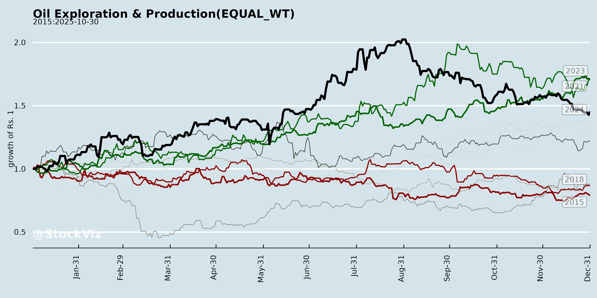
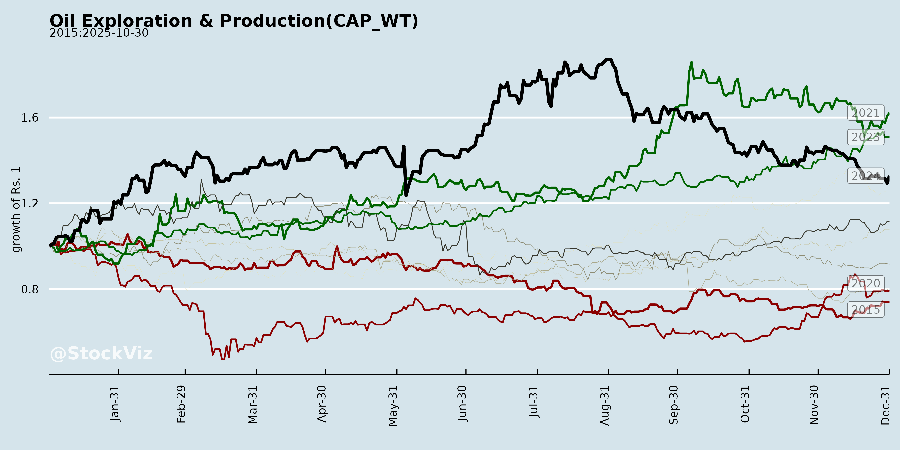
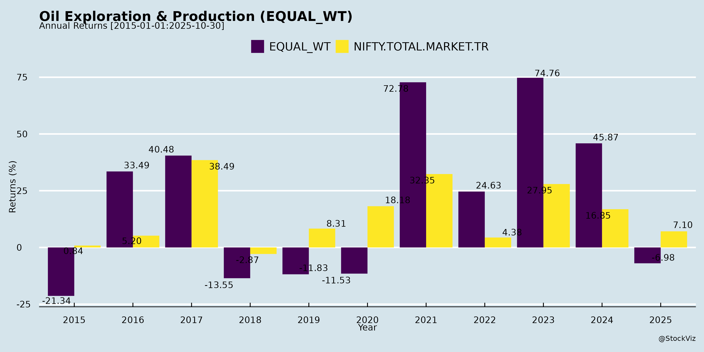
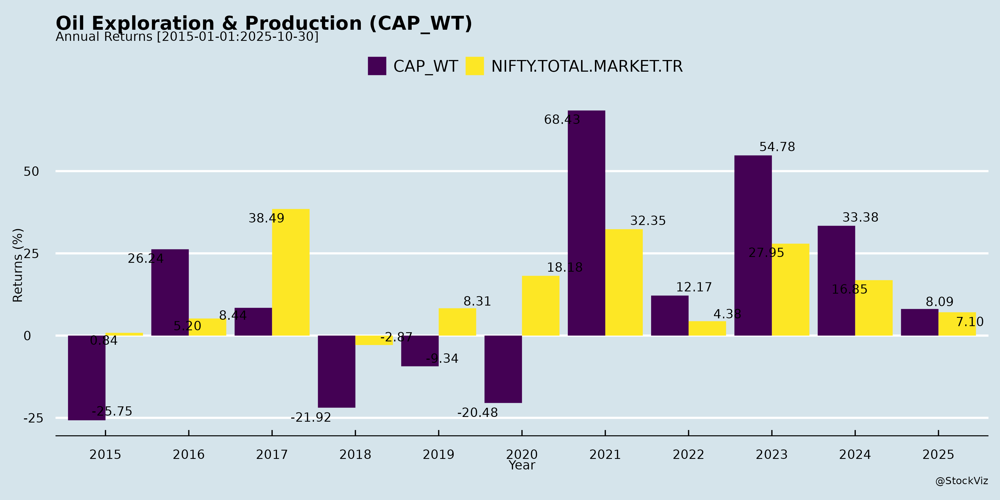
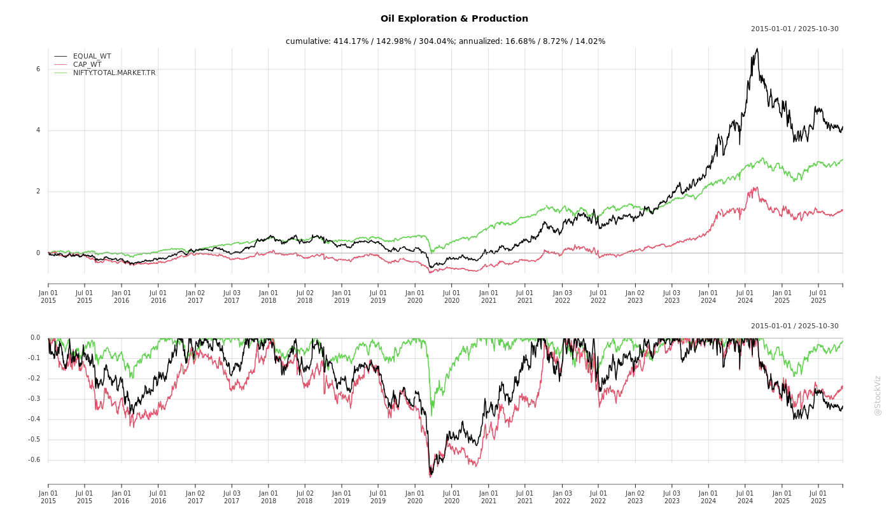
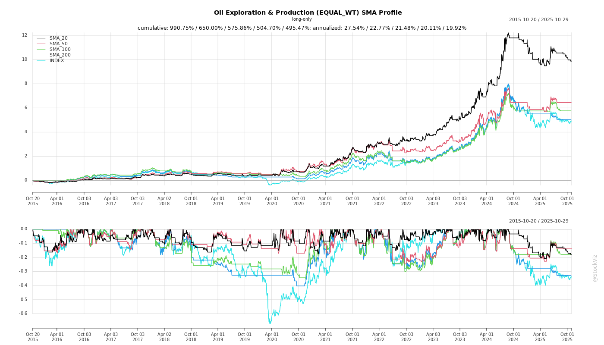

Annual Returns




Cumulative Returns and Drawdowns

SMA Scenarios

Current Distance from SMA
EBIT (% of Industry Total)
Revenue (% of Industry Total)
AI Summaries
Analyst
asof: 2025-11-29
Summary Analysis: Indian Oil Exploration & Production (E&P) Sector
Based on the provided documents (primarily Q2 FY26 earnings transcripts from Oil India Limited (OIL) and Hindustan Oil Exploration Company Ltd (HOEC), with notices from ONGC and Selan), here’s a concise analysis of the Indian E&P sector. Focus is on upstream operations, with integrated elements (e.g., OIL’s NRL refinery). The sector shows resilience amid lower crude prices (~$67-68/bbl realization), driven by domestic exploration, infrastructure buildout, and gas focus, but faces near-term disruptions.
Tailwinds (Supportive Factors)
- Exploration Successes & Resource Expansion: OIL reported gas occurrences in Andaman (Vijayapuram-2/3 wells; plans 3D seismic, more drilling); HOEC unlocked oil/gas in Kharsang (900 bpd from 5 wells, substantial gas potential) and North Balol. Builds contingent resources; partnerships eyed (OIL with TotalEnergies/Woodside).
- Infrastructure Progress: OIL’s Numaligarh-Siliguri pipeline commissioned (Oct 2025); DNPL expansion (1-2.5 MMSCMD) mechanically complete, targeting Apr 2026 ops. HOEC benefits from NE gas grid (Guwahati-Numaligarh done; DNPL linkage key). NRL refinery at 100%+ utilization, expansion commissioning Dec 2025.
- Production Ramp & Gas Focus: OIL steady-state ~9,700-10,000 mtpd oil post-disruptions; FY26 guidance 3.55 MMT oil/3.6 bcm gas. HOEC targets 6,000 boepd FY27 via drilling (18+ onshore, 10 offshore wells). Gas pricing stable (~$6.7-7.8/MMBTU).
- Financial Resilience: OIL Q2 standalone PAT ₹1,044 Cr (+29% QoQ); EBITDA 34%; dividend ₹3.5/share. HOEC revenue up to ₹325 Cr (consol.); EBITDA ₹25 Cr despite monsoon. Capex execution strong (OIL 70-75% of ₹7,000 Cr budget).
- Policy/Govt Support: NRL bioethanol plant inaugurated; Mozambique force majeure lifted (OIL’s 4% stake).
Headwinds (Challenges)
- Commodity Price Pressure: Crude realization down 18% YoY ($67.22/bbl HY26 vs. $82); revenue drop ~44% YoY for OIL. Gas steady but demand-constrained (e.g., HOEC Dirok offtake 14 MMscfd vs. 20 prior).
- Production Volatility: OIL Q2 dip (oil -0.6% QoQ, gas -2.8%) due to NE ethnic blockades; recovered to ~9,600 mtpd. HOEC impacted by monsoon (B-80 oil/gas down 35-38%) and low NE demand.
- Cost Escalations: OIL other expenses up (write-offs ₹700 Cr Gabon/Bangladesh + ₹723 Cr Andaman); employee costs +₹60 Cr (DA/gratuity revision). HOEC field opex steady but capex-intensive.
- Commercial Disputes: HOEC’s ₹259 Cr HPCL crude claim (contamination allegation post-COSA transfer; no quality warranty, under amicable discussion).
- Operational Delays: HOEC well-control issue in Kharsang-6 (resolving soon); rig shortages noted.
Growth Prospects
- Volume Growth: OIL eyes 4 MMT oil/4.6 bcm gas by FY28 (via drilling 32+ wells HY26, offshore). HOEC: 3x NE gas offtake post-grid (Dirok to 45-50 MMscfd); offshore (B-80/B-15/PY1) drilling FY27 unlocks 100 MMboe reserves.
- Integrated Value Chain: OIL NRL GRM $10.56/bbl (+110% QoQ), targeting full expansion (3 MMSCMD gas); Paradip pipeline for imports.
- Capex-Led Expansion: OIL capex >₹7,000 Cr FY26 (E&P 60%); HOEC ₹250+ Cr debt for 45+ NE wells +10 offshore. IRR >21% even at low prices (HOEC).
- Gas Transition Play: NE grid unlocks (OIL/HOEC); Andaman appraisal could yield contingent resources by FY27 end.
- M&A/Partnerships: OIL international revival (Mozambique); HOEC farm-ins eyed.
Key Risks
| Commodity/Price |
Volatility ($60-65/bbl sustained hits margins 30% PAT to ~20-25%). |
Natural hedging (storage); revenue-sharing cushions. Medium impact. |
| Operational |
Disruptions (NE ethnic/weather/monsoon); rig shortages. |
Normalized (OIL at steady-state); Oil India support for HOEC. High near-term. |
| Exploration |
Dry wells/write-offs (OIL Andaman/Gabon; HOEC sidetracks). |
Success-based capex; 100% drilling targets met. High but phased. |
| Infrastructure |
Delays in DNPL/NE grid/PNGRB approvals (OIL Apr 2026; HOEC Q4 FY26). |
Mechanicals done; govt priority. Medium-high. |
| Geopolitical/Regulatory |
Mozambique security; HOEC HPCL dispute/PY3 tribunal; approvals (PESO/FC). |
Amicable resolutions; insured. Low-medium. |
| Financial |
Capex funding (HOEC debt ₹250 Cr); write-offs erode EBITDA. |
Strong cash (OIL); ratings affirmed. Low. |
| ESG/External |
Ethnic blockades (OIL NE); demand seasonality (tea gardens). |
Normalized ops; grid diversification. Medium. |
Overall Outlook: Positive medium-term with tailwinds from infra/gas grid outweighing headwinds. FY26 growth tempered by prices/disruptions, but FY27+ strong (production +20-30%, value unlock). Sector resilient (OIL PAT margins 19% despite headwinds); monitor NE grid/DNPL for catalysts. ONGC/Selan add limited color (investor meets only).
Financial
asof: 2025-12-01
Summary Analysis: Indian Oil Exploration & Production Sector (Based on ONGC and HOEC Q3/9M FY25 Results)
Using the provided documents from ONGC (India’s largest E&P player) and HOEC (mid-tier E&P operator) as key inputs, here’s a structured analysis of headwinds, tailwinds, growth prospects, and key risks for the Indian Oil Exploration & Production (E&P) sector. ONGC dominates (~70% domestic production), while HOEC exemplifies smaller players. Analysis reflects Q3/9M FY25 performance (ended Dec 31, 2024), amid stable crude prices (~USD 70-75/bbl) and India’s push for energy security.
Tailwinds (Positive Drivers)
- Strong Operational Cash Flows & Profitability: ONGC standalone profit ₹8,240 Cr (Q3) / ₹29,162 Cr (9M); consolidated ₹9,784 Cr (Q3) / ₹29,472 Cr (9M). HOEC consolidated profit ₹433 Cr (Q3) / ₹960 Cr (9M). Robust revenue from E&P (ONGC offshore/onshore ~₹33k Cr Q3) supports dividends (ONGC 2nd interim ₹5/share @100%; total FY25 ~₹11/share).
- Government Support & Policy Stability: Dividend payouts and approvals (e.g., ONGC’s Mangalore SEZ investment ₹561 Cr) signal policy backing. India’s NELP/HELP/OALP regimes aid exploration.
- Domestic Production Resilience: ONGC’s segment revenue stable (offshore ₹23.7k Cr Q3); HOEC revenue ₹156 Cr Q3 despite smaller scale.
- Cost Efficiencies: Declining exploration write-offs (ONGC survey costs ₹458 Cr Q3 vs. prior highs); inventory builds signal output ramp-up.
Headwinds (Challenges)
- High Statutory Levies & Costs: ONGC levies ₹6.6k Cr Q3 (standalone); HOEC royalty/cess ~₹133 Cr Q3. Depletion/depreciation high (ONGC ₹6.8k Cr Q3).
- Governance & Regulatory Gaps: ONGC lacks independent directors; Audit Committee not reconstituted, forcing Board-level approvals (auditor emphasis of matter).
- Margin Pressure: ONGC consolidated operating margin ~10% (down from 14% 9M FY24); refining/marketing drags (weak cracks). HOEC profit down 7% YoY (9M).
- Restatements & Prior Errors: ONGC restated Q3/9M FY24 for OBN survey capitalization (profit uplift ₹476/1,189 Cr); signals accounting clean-ups but erodes trust.
Growth Prospects
- Strategic Acquisitions & Stake Builds: ONGC acquired 1.15 Cr shares in Mangalore SEZ (₹561 Cr); OPaL stake ↑ to 95.69% (via ₹18k Cr infusion), turning JV into subsidiary for downstream integration.
- Exploration Expansion: 201 NELP/HELP blocks (ONGC share: revenue ₹1,441 Cr Q3); overseas (OVL Mozambique, Russia) potential despite delays.
- Production Ramp: ONGC offshore assets ₹196k Cr; refining capacity via HPCL/MRPL/OPaL. HOEC’s blocks (e.g., offshore) show revenue growth potential.
- Energy Transition: ONGC Green/Indradhanush Gas Grid JVs position for gas/LNG; sector benefits from India’s 500 GW RE target (E&P complements).
Projected Growth: ONGC targets 5-7% production CAGR; sector ~3-5% via discoveries/revivals. OPaL control unlocks ₹20k+ Cr synergies.
Key Risks (High-Impact Threats)
| Contingent Liabilities |
PMT JV arbitration (USD 1.62B / ₹13,907 Cr demand); GST/ST on royalty (provision ₹16,519 Cr + contingents ₹7,888 Cr). Pending SC ruling on ORD Act royalty. |
₹20k-25k Cr hit if adverse; 10-15% of net worth. |
| Arbitration/Geopolitical |
PMT award expected Mar 2025; Russia ops (Sakhalin-1 fair value reset ₹14.5k Cr; Mozambique force majeure ₹907 Cr borrowing costs expensed). |
Production halts; forex/repatriation blocks (₹5.6k Cr abandonment fund stuck). |
| Tax/Regulatory |
Royalty GST disputes (deposits ₹15.9k Cr under protest); DGH recasts. No Audit Committee hampers governance. |
Cash outflows; SEBI penalties. |
| Operational/Commodity |
Dry wells/exploration write-offs (ONGC ₹1.9k Cr Q3); volatile oil prices; decommissioning liabilities. |
20-30% profit volatility. |
| Financial/Liquidity |
Debt/Equity 0.37 (consol.); high finance costs ₹3.7k Cr Q3. Negative working capital in refining. |
Refinancing risks if rates rise. |
Overall Sector Outlook: Moderately Positive (Tailwinds > Headwinds short-term). Strong fundamentals (ONGC ROE ~15-20%) offset risks via buffers (net worth ₹372k Cr consol.). Growth via M&A/downstream; monitor contingencies (40% upside/downside). HOEC mirrors but amplified risks due to scale. Investors: Buy ONGC for stability; HOEC for high-beta plays.
Sources: ONGC/HOEC filings (financials, notes, auditor reports).
General
asof: 2025-12-03
Indian Oil Exploration & Production (E&P) Sector Analysis
Based solely on the provided regulatory filings (SEBI LODR Reg. 30 disclosures from ONGC, Oil India, Prabha Energy, HOEC, and Selan Exploration/Antelopus), the analysis focuses on governance, leadership, and market signals. No financial/operational metrics are disclosed, limiting depth to personnel changes, compliance, and stock dynamics.
Headwinds (Challenges)
- Leadership Transitions & Superannuations: Multiple senior exits signal potential disruptions. ONGC’s Executive Director (Santanu Mukherjee) superannuates 01.12.2025; Oil India’s ED (Engineering Services) Gauranga Borgohain retires 30.11.2025. HOEC notes cessation of Independent Director Sharmila Amin (term completion, 16.12.2024). Aging workforce in PSUs (ONGC/Oil India) could lead to knowledge gaps, delayed succession, and operational continuity risks.
- Regulatory Scrutiny & Compliance Delays: HOEC faced exchange queries on delayed disclosure (e.g., >24-hour lag on ID term end), requiring clarifications. Linked cessation/appointment treated as bundled event, highlighting administrative burdens.
- Stock Volatility: Selan/Antelopus clarifies recent price movements as “market-driven” with no material events, reaffirming Q2 guidance but underscoring sector sensitivity to speculation amid flat operations.
Tailwinds (Positive Factors)
- Routine Governance Stability: Smooth director transitions (e.g., HOEC appoints new ID Bhavani Balasubramanian, experienced CA with 40+ years; committee reconstitutions). Prabha Energy’s proactive AGM/e-voting setup (cut-off 01.08.2025) shows compliance readiness.
- No Adverse Material Events: All filings emphasize normal operations (Selan: “in line with Q2 guidance”; HOEC/Selan: no undisclosed info). Reinforces operational steadiness in a regulated sector.
Growth Prospects
- Limited Visibility: Filings lack exploration/production updates or capex plans. Indirect positives include continuity (e.g., Oil India’s Engineering Services ED exit not flagged as disruptive) and governance refreshes (new HOEC ID with audit/Deloitte expertise could aid strategic oversight). Prabha Energy’s AGM/annual report dissemination suggests shareholder engagement for potential approvals (e.g., growth initiatives), but no specifics.
- Neutral Outlook: Sector appears steady (no “significant changes” per Selan), with potential for organic growth if leadership gaps are filled swiftly. PSUs like ONGC/Oil India may leverage scale for bids, but docs imply status quo.
Key Risks
- Succession & Talent Retention: High superannuation rate (3 filings) risks execution delays in E&P ops (drilling, engineering). One level below Board (Reg. 30 threshold) changes could cascade.
- Disclosure/Compliance Lapses: HOEC delay example risks fines/scrutiny; bundled reporting may invite future queries.
- Market & External Volatility: Share price swings (Selan) without fundamentals signal liquidity/manipulation risks. No buffers noted against oil price/geopolitical shocks.
- Governance Gaps: ID term limits (HOEC) ensure independence but require seamless replacements; unapproved appointments (e.g., shareholder ballot pending) add uncertainty.
Summary
The Indian Oil E&P sector shows stability with mild headwinds from leadership churn (superannuations in PSUs/midsize firms) and compliance pressures, offset by routine governance (new appointments, AGMs). Tailwinds are compliance-driven, with no operational boosts evident. Growth prospects are subdued (tied to unmentioned upstream activity), while key risks center on succession and volatility. Overall, neutral near-term outlook—monitor Q3 disclosures for succession outcomes and any material updates. Sector resilience implied by “normal course” affirmations, but proactive talent pipelines needed.
Investor
asof: 2025-11-29
Summary Analysis: Indian Oil Exploration & Production (E&P) Sector
Based on Q2 FY26 earnings transcripts and investor presentations from key players (ONGC, Oil India Ltd., Prabha Energy, HOEC, Selan Exploration Technology), the sector exhibits resilience amid volatility. Companies are focusing on gas-led growth, drilling intensification, and infrastructure unlocks, but face near-term pressures from prices and operations. Below is a structured analysis of headwinds, tailwinds, growth prospects, and key risks.
Tailwinds (Supportive Factors)
- Gas Focus & Policy Push: Strong government emphasis on domestic gas production (target: 5 MMSCMD CBM by FY28; $60bn infra investment by 2030). Gas pricing steady (~$6.7-7.8/MMBTU); Northeast Gas Grid (DNPL/IGGL) nearing completion, enabling 2-3x offtake ramp-up (e.g., Oil India, HOEC expect Q4 FY26/Q1 FY27 surge).
- Refinery Expansions: NRL (Oil India subsidiary) at 100%+ utilization, targeting Dec 2025 commissioning; increases crude demand.
- Exploration Momentum: Gas shows in Andaman (Oil India), Kharsang/Dirok successes (HOEC); CBM assets (Prabha/Selan) with 10 BCM+ potential and market-linked pricing.
- Capex Discipline: Budgets exceeded (e.g., Oil India INR7,000cr+); mergers (Selan-AEPL, Prabha) unlock value, consolidate assets.
- Production Stability: Selan at ~1,200 boepd (+61% YoY); dividends (Oil India INR3.5/share) signal cash flow strength.
Headwinds (Challenges)
- Commodity Price Decline: Crude realizations down 18% YoY (~$67-68/bbl vs $82 prior); revenue drops 44% (Oil India), EBITDA margins squeezed (34% vs 47%).
- Operational Disruptions: Northeast ethnic blockades/monsoons caused 2-3% production dips (ONGC/Oil India ~1.65 mmtoe; HOEC Dirok 14 MMscfd vs 20 prior); unplanned shutdowns (LPG/NRL).
- Exploration Costs: High write-offs/provisioning (Oil India INR1,423cr for Andaman/Bangladesh/Gabon; HOEC ongoing).
- Demand/Infra Delays: Gas offtake constrained pre-grid (tea season lows); HPCL payment dispute (HOEC ~INR259cr).
- Higher Expenses: Employee costs up (DA revision); other expenses elevated due to provisions.
Growth Prospects
- Production Targets: Oil India: 3.5-3.55 mmtoe FY26, 3.75 mmtoe FY27, 4 mmtoe FY28 (gas to 3.6/3.8/4.6 bcm). HOEC: 6,000 boepd FY27. Selan: Phase-2 drilling (Bakrol/Karjisan) for Q3 FY26 uplift; Duarmara/Dangeru first gas Sep 2025.
- Drilling Pipeline: 18-45 wells onshore (Kharsang/Dirok/Cambay); 10 offshore (HOEC B-80/B-15/PY1). Selan: 2P reserves 61 mmboe across assets; Prabha CBM commerciality Q1/Q4 FY26.
- Resource Monetization: 2P in-place ~133/63 mmboe (Selan Bakrol/Karjisan); CBM/marginal fields (Prabha 10 BCM/50 bcf). Offshore discoveries (D-31/D-11) with 35+ mmboe reserves.
- Value Unlocks: Pipeline commissioning (Oct 2025 Numaligarh-Siliguri); NRL GRM $10.56/bbl; IRR >21% even at low prices (HOEC).
- Long-Term: Gas transition fuel; national grid access; FY26-28 capex to drive 2-3x production in key fields.
Key Risks
| Exploration |
Dry wells/write-offs (e.g., Andaman provisioning); high capex (~INR1,900cr Oil India E&P). |
Phased drilling; JV partners (ONGC/OIL/IOC). |
| Operational/Geopolitical |
Northeast disruptions (ethnic/monsoon); well control issues (HOEC #6 well). |
Normalized ops; insurance coverage. |
| Price/Commodity |
Crude volatility ($60-65/bbl sensitivity: ~3% PAT impact); gas demand seasonality. |
Natural hedging (storage); revenue-sharing PSCs. |
| Regulatory/Infra |
Pipeline delays (DNPL PNGRB/PESO); approvals/extensions (HOEC B-15/PY1). |
Govt. spend >INR10,000cr; mechanical completion done. |
| Financial |
Debt for capex (HOEC INR250cr); buyer disputes (HPCL). |
Strong cash (ratings IND A); internal accruals. |
| Execution |
Rig shortages; monsoon timing for workovers/drilling. |
Multi-rig shortlisting; partner rigs (OIL). |
Overall Outlook: Sector poised for gas-led recovery post-Q4 FY26 grid ops, with 20-50% production growth potential. Near-term EBITDA pressure from prices/disruptions, but robust reserves (100+ mmboe/company) and drilling (50+ wells FY26) support multi-year upside. Risks tilted operational/regulatory, balanced by policy tailwinds. Investors should monitor Northeast grid (Q4 FY26) and drilling results.
Meeting
asof: 2025-12-01
Summary Analysis: Indian Oil Exploration & Production (E&P) Sector
Based on the provided filings from key players (ONGC, Oil India Ltd., Prabha Energy Ltd., Hindustan Oil Exploration Co. Ltd. (HOEC), and Antelopus Selan Energy Ltd.) for Q2/H1 FY26 (ended Sep 2025) and related corporate actions (AGMs, board outcomes), here’s a sector-level analysis. These documents reflect stable governance amid modest operational performance, with mixed financials driven by exploration-stage challenges. Dates are futuristic (2025), but insights are derived directly from content.
Tailwinds (Positive Factors)
- Strong Shareholder Confidence & Governance: All AGMs (Oil India 66th, HOEC 41st) passed resolutions overwhelmingly (>97-99% in favor), including financials adoption, director appointments/re-appointments, auditors, and cost auditor remuneration. ONGC appointed an interim Compliance Officer (Shri Shashi Bhushan Singh, 25+ yrs exp.), ensuring regulatory continuity.
- Dividend & Capital Strength: Oil India declared ₹1.50/share dividend (15% payout); promoter voting 100% in favor across resolutions.
- M&A & Asset Integration: Prabha Energy completed reverse merger (Deep Energy Resources + Savla Oil & Gas); Antelopus Selan amalgamated Antelopus Energy (Pooling of Interests under Ind AS 103), restating prior financials. Antelopus allotted 1.99 Cr shares post-scheme.
- Revenue Momentum: Antelopus Selan: Net revenue ₹5,513 lakhs (Q2), ₹10,576 lakhs (H1), up from prior; profit ₹1,181 lakhs (Q2). Oil India: High shareholder participation (89% turnout).
- Leadership Stability: Multiple director appointments (Oil India: 9 new/renewals; Prabha: New Independent Director Shivangi Shah).
Headwinds (Challenges)
- Persistent Losses in Exploration Plays: Prabha Energy reported H1 loss ₹51 lakhs (standalone), ₹41 lakhs (consolidated); high opex (₹265 lakhs H1) and capex (₹27,115 lakhs CWIP). NK block wells in testing phase—no depletion yet.
- Modest Margins & Costs: Antelopus: High royalty/depreciation (₹1,038/₹1,379 lakhs Q2); Oil India: Minor opposition (0.03-9.7%) on independent director appointments.
- Restatements & Transitions: Multiple restatements (Prabha/Antelopus mergers); name/office changes (Antelopus Selan; Selan office shift).
- Low Institutional Participation: HOEC: Institutions voted 44% but fully against director re-appointment (Resolution 2).
Growth Prospects
- Production Ramp-Up: Antelopus commenced commercial production at Mukkamala (Dangeru area); acquiring full 100% PI in Cambay PSC (50% already via farm-in; Hof signed for balance, USD 13.5 Mn payable post-GoI approval).
- Exploration Assets: Prabha: NK block testing sales recognized; ₹27 Bn+ intangible/CWIP signals drilling push. Oil India/ONGC: Subsidiary expansions (ONGC Videsh).
- Capex & Reserves: Sector CWIP high (Antelopus ₹15,843 lakhs; Prabha ₹27,115 lakhs); potential depletion post-reserve certification.
- Scale via M&A: Mergers boost reserves (Antelopus: Oil/Gas assets ₹31 Bn); farm-ins (Cambay FIFO).
- Outlook: Oil price tailwinds (international rates), forex gains possible; new directors signal expertise infusion.
Key Risks
| Operational |
Well testing delays (Prabha NK block—no proved reserves yet); new fields ramp-up risks (Antelopus Mukkamala/Cambay). |
ICAI Guidance Note compliance; GoI approvals pending. |
| Financial |
Losses/high debt (Prabha borrowings ₹14.7 Bn); capex intensity (Antelopus ₹6 Bn H1 invest.); forex/oil price volatility. |
Cash positives (Antelopus ₹4.3 Bn operating cash); dividends buffer. |
| Regulatory |
GoI/PSC approvals (Cambay transfers); SEBI LODR compliance (e.g., ONGC interim officer till regular CS). |
Smooth AGMs; no debarments declared. |
| Market/Governance |
Shareholder dissent (Oil India 9-35% against some IDs; HOEC 2% against director). Low promoter holding visibility (HOEC 0%). |
High promoter votes in Oil India (56% holding). |
| Accounting/Compliance |
Merger restatements (Ind AS 103); share allotments pending (Antelopus suspense acct.). |
Audited/limited reviewed; no qualifications. |
Overall Sector Snapshot: Resilient governance (100% resolution passes) amid exploration headwinds (losses in Prabha). Tailwinds from M&A/production starts position growth (Antelopus profitability standout). Prospects tied to reserves certification/oil prices; risks skewed operational/financial. Positive cash flows (Antelopus ₹4 Bn H1) support capex. Monitor Q3 for Cambay updates/oil prices.
Press Release
asof: 2025-11-29
Summary Analysis: Indian Oil Exploration & Production (E&P) Sector
Using the provided press releases from ONGC Videsh, Oil India Limited (OIL), and Prabha Energy Limited (PEL) as key inputs, the analysis below focuses on headwinds (challenges), tailwinds (supportive factors), growth prospects, and key risks for the Indian E&P sector. These documents highlight recent positive milestones amid ongoing operational hurdles, reflecting resilience in a sector aligned with India’s energy security goals (e.g., increasing natural gas share to 15% by 2030 and CBM production to 5 MMSCMD by FY27-28).
Tailwinds (Positive Momentum)
- Security Normalization and Project Reactivation: End of Force Majeure (declared May 2021) in Mozambique’s Area 1 LNG project (ONGC Videsh’s 16% stake via subsidiaries). Improved security in Cabo Delgado enables restart of 13.12 MMTPA LNG construction, signaling de-risking of overseas assets.
- Operational Success in Crisis Management: OIL’s safe capping of Well KSG#76 at Kharsang (post-Oct 2025 blowout) demonstrates strong engineering, global expertise (e.g., Cudd Well Control, USA), and coordination, boosting investor confidence in well control capabilities.
- Unconventional Gas Ramp-Up: PEL’s commercial CBM gas production from North Karanpura block (early FY26), with cascade sales and impending pipeline connectivity for scaled volumes. Aligns with govt reforms promoting CBM, marginal fields, and NELP blocks.
Headwinds (Challenges)
- Historical Disruptions from Security/Instability: Prolonged Force Majeure in Mozambique (4+ years) due to Cabo Delgado insurgency halted construction since 2019, underscoring vulnerability of African assets to geopolitical risks.
- Well Control Incidents: OIL’s Kharsang blowout (Oct 2025) caused uncontrolled gas release, requiring high-risk BOP removal and capping—highlighting operational disruptions and resource-intensive interventions.
- Infrastructure Bottlenecks: PEL notes ongoing gas evacuation pipeline work delaying full monetization, reflecting broader E&P delays in midstream connectivity.
Growth Prospects
- LNG and Export-Led Expansion: Restart of Mozambique LNG (26.5% operator TotalEnergies) positions ONGC Videsh for early project completion, tapping global LNG demand and India’s import diversification.
- Domestic Unconventional Surge: PEL’s CBM milestone supports national targets; combined with OIL’s Arunachal operations and ONGC’s portfolio, sector poised for higher gas output from CBM/marginal fields.
- Policy and Collaboration Boost: Govt reforms (e.g., liberalized E&P policies), international partnerships (e.g., TotalEnergies, Mitsui, BP), and crisis resolution expertise enable scaled production, sustainable operations, and energy mix diversification.
Key Risks
| Geopolitical/Security |
Insurgencies or instability in operating regions (e.g., Africa). |
Mozambique Force Majeure (2021-2025). |
| Operational/Technical |
Blowouts, well failures, or complex interventions delaying output. |
OIL Kharsang incident; BOP/capping complexities. |
| Infrastructure |
Pipeline/evacuation delays impacting monetization. |
PEL’s pending gas pipeline completion. |
| Execution/Regulatory |
Construction restarts vulnerable to renewed disruptions; compliance under SEBI LODR. |
All filings emphasize regulatory disclosures amid ops resumption. |
| Market/Financial |
Gas price volatility, capex overruns in LNG/CBM projects. |
Implied in early cascade sales and phased well control. |
Overall Outlook: Bullish short-term tailwinds from de-risking (Mozambique, Kharsang) outweigh recent headwinds, with strong growth in LNG/CBM. Sector resilience via global-local collab supports India’s 2030 gas ambitions, but vigilance on security/ops risks essential. No major systemic red flags in these updates.
Copyright © 2023 SAS Data Analytics Pvt. Ltd. All rights reserved.
🐞